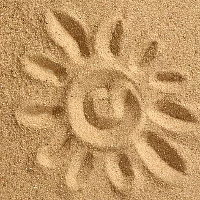

Пісочна терапія
Пісочна терапія допоможе кожній дитині позбутися негативу та агресії, стати більш впевненим у собі.
Засновником методики пісочної терапії був К. Г. Юнг. Саме завдяки його теорії "психічного імунітету" і здатності свідомості до зцілення, трансформації і самозбереження його послідовник Дора Калф винайшла пісочну терапію.
Мета пісочної терапії:
- виявити та охарактеризувати характеристики особистості дитини;
- налаштувати на розуміння себе і свого "Я" у світі і життєвій діяльності;
- навчитися створювати модель своїх фантазій на піску і пояснювати їх;
- проаналізувати комунікативні труднощі (здатність дитини до спілкування і вміння висловлювати словесно свої думки);
- позбавити від страхів і психологічних травм.